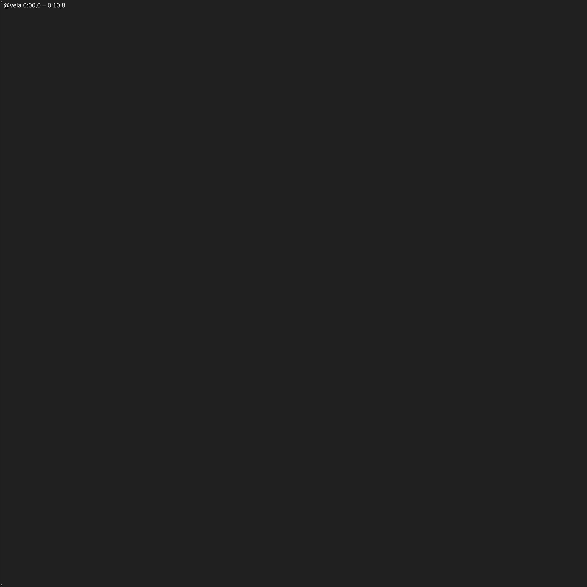

Recorridos · Cap2_02_MananaDespues
Cada personaje con su color; un punto cada 2 s (con el segundo cada 10 s); los conos son las cámaras con su número de plano.
1. @vela · 0:00,0 – 0:10,8

2. @bollo · 0:10,8 – 0:45,8
3. @origen · 0:45,8 – 1:34,8
4. @eldran · 1:34,8 – 2:06,0
5. @aro · 2:06,0 – 3:15,1